Objetivos
La óptica u objetivo en realidad está compuesta por un juego de lentes fijas o móviles que concentran y enfocan el haz de luz que proyecta l imagen que queremos fotografiar. Este dispositivo puede tener distintas características de ángulos de cobertura, lo que nos permitirá alcanzar distintos campos visuales, desde los más amplios a lo más estrechos o concentrados, pero siempre proyectará l imagen enfocándola con nitidez sobre el plano del material sensible (Película o Sensor).
La distancia entre el centro óptico y el punto de foco es lo que llamamos “Distancia Focal” y tendrá una variación relacionada con el ángulo de cobertura del objetivo y el tamaño de la superficie del negativo. Aclaremos también que todo objetivo tiene una distancia mínima de enfoque al sujeto; si tratamos de hacer una fotografía por debajo de dicha distancia no podremos enfocar.
El enfoque se realiza mediante pequeñísimos desplazamientos de la distancia focal.
Esta distancia focal dependerá además del ángulo de cobertura del campo visual que tenga el objetivo; cuanto mayor sea este ángulo, mayor será el campo visual que registrará; así encontraremos distintas capacidades y características en las ópticas
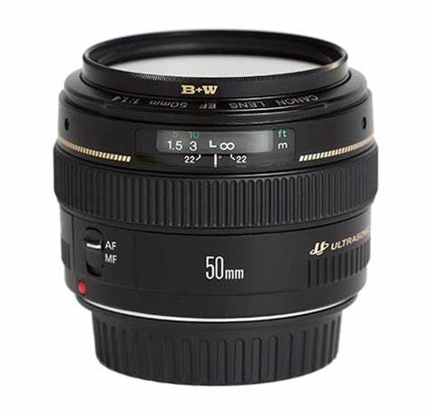
Objetivos Normales:
Los objetivos normales son llamados así debido a que producen una visión similar a la del ojo humano, no en cuanto al campo visual sino a la característica de perspectiva y proporciones. En el formato 35mm se considera como normal una distancia focal de 50mm.
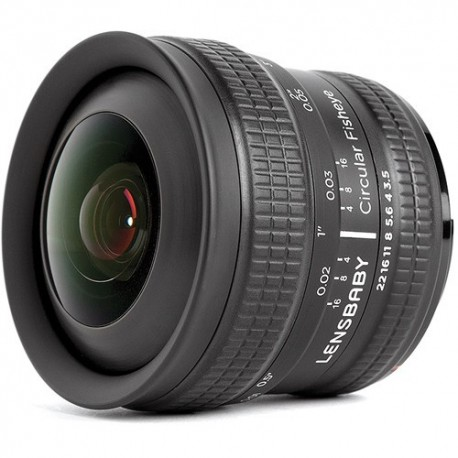
Ojo de pez:
Proporciona un campo de visión máximo, llegando a los 180 grados. Crean imágenes muy espectaculares y claramente deformadas. Un ejemplo de ojo de pez es el objetivo 8mm (Ideales para fotos en acción)
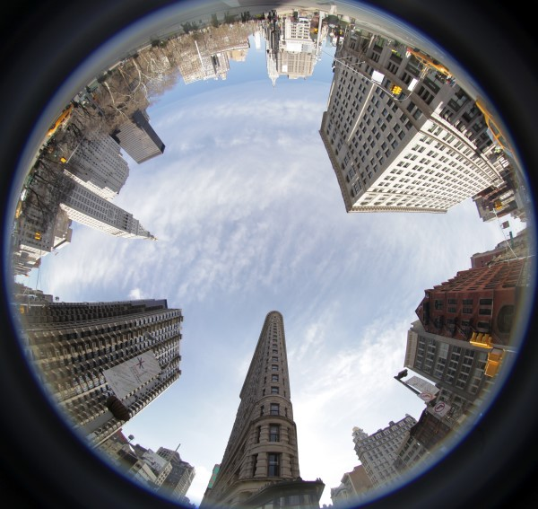
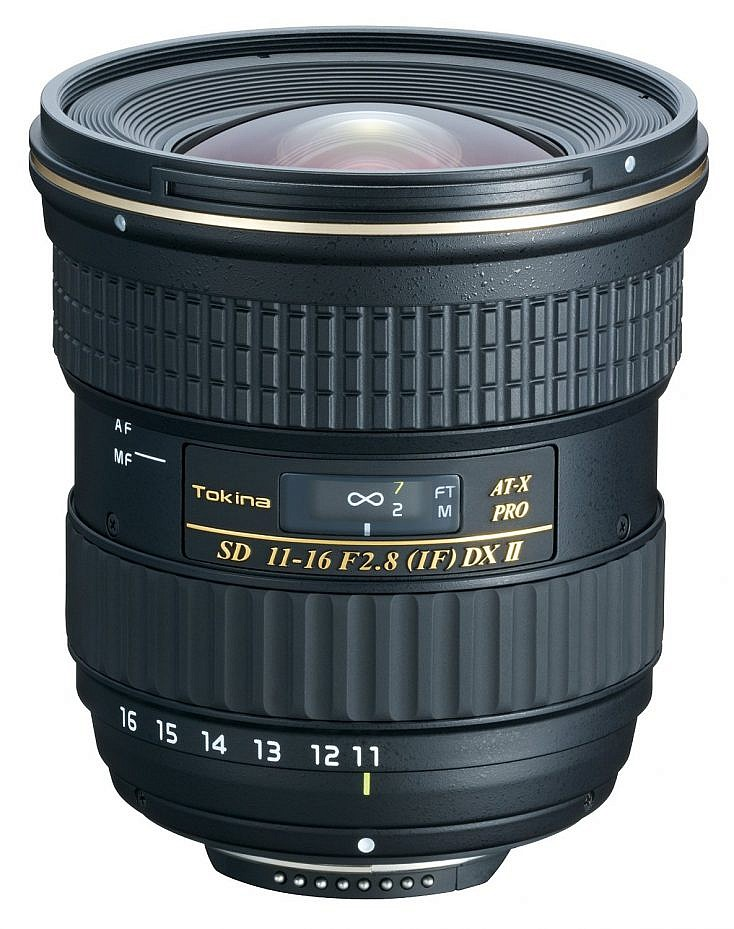
Objetivos gran angulares:
Estos objetivos tienen un campo visual que pueden cubrir; su distancia focal está por debajo de los 50mm (Siempre refiriéndonos al formato 35mm) y permite una toma más “anchas” que un objetivo normal (un ejemplo 10-20mm).
Son ideales donde se requiere un campo visual amplios, como paisajes (o para sacar fotos a interiores, generando la sensación de mayor espacio) (esta posee una cierta deformidad en la imagen de redondeo, especialmente visible en sus bordes)
Estos objetivos también se caracterizan por tener una mayor profundidad de campo.
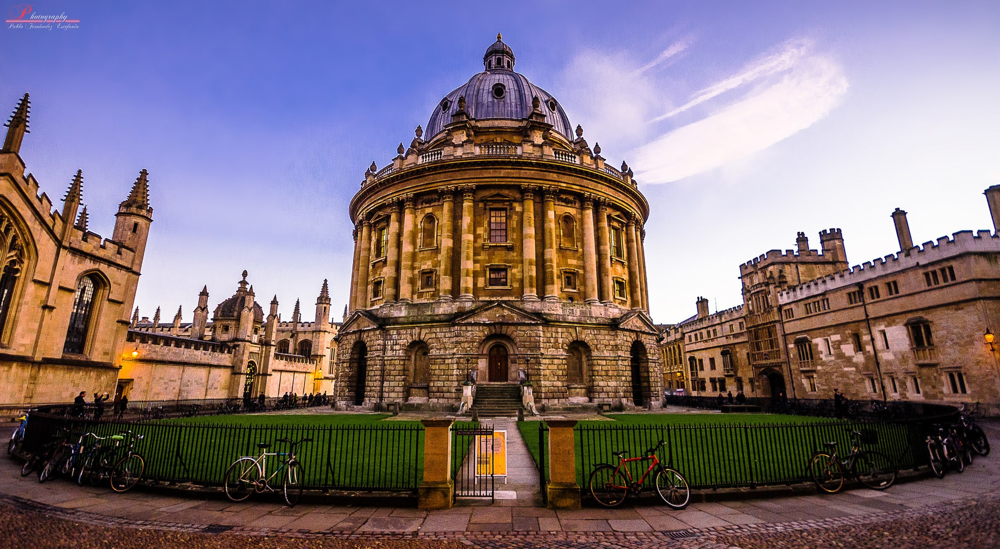
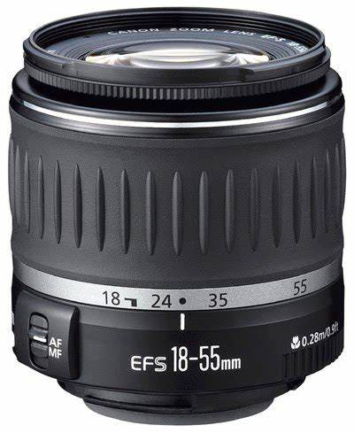
Zoom Intermedio o Kit:
Suelen cubrir un rango focal entre los 18mm y los 90mm. Son muy versátiles porque te permiten modificar la composición rápidamente (un ejemplo sería un objetivo de 18-55mm)
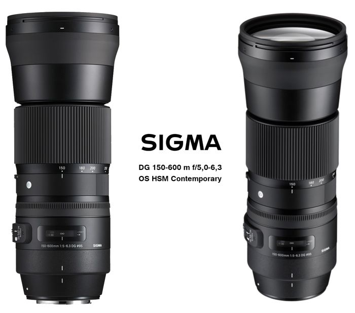
Teleobjetivos
Son aquellos objetivos cuya distancia focal superan los 50mm; cuanto mayor sea ésta, menor será el de cobertura, lo que permite realizar acercamientos de objetivos alejados (70mm - 200mm).
Paralelamente, cuanto mayor sea el teleobjetivo, menos será la profundidad de campo.
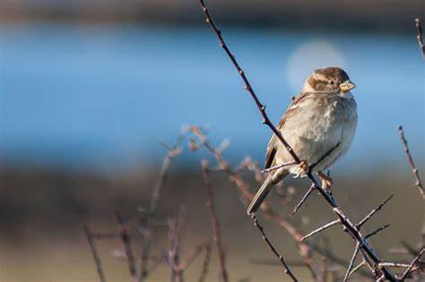
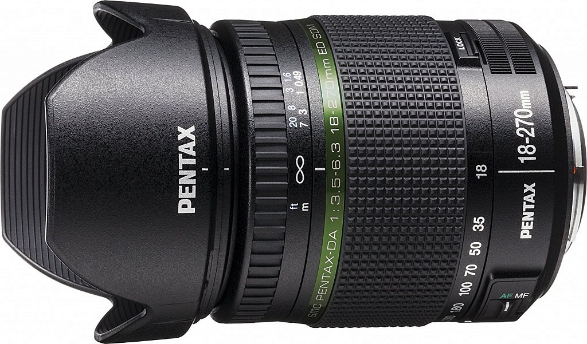
Todo Terreno:
Son objetivos que cubren un rango muy amplio de focal. Tienen de todo un poco, de gran angular, de zoom intermedio, y de teleobjetivo (18mm - 400mm).
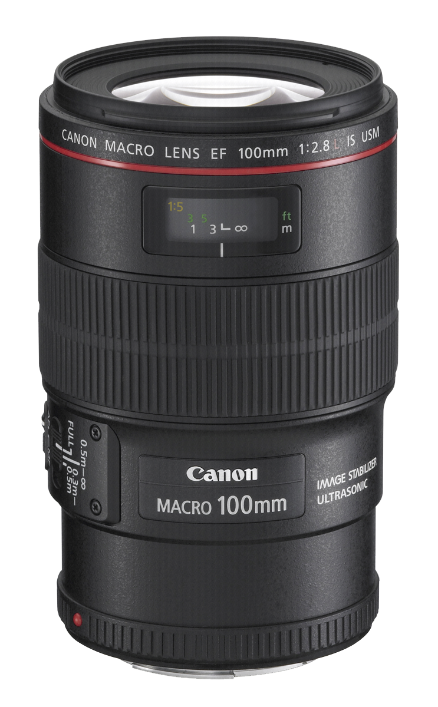
Objetivos Macros
Indicados para obtener un máximo acercamiento al objeto, los objetivos macro ofrecen distancias mínimas de enfoque y son ideales para fotografiar pequeños objetos tales como insectos, flores, etcétera.
Estos objetivos presentan muy poca profundidad de campo, la que será mayor cuanto más corta sea la distancia focal
(Lente macro corta: 30-50mm)
(Lente macro Estándar: 60-105mm)
(Teleobjetivos macro: 150-200mm)
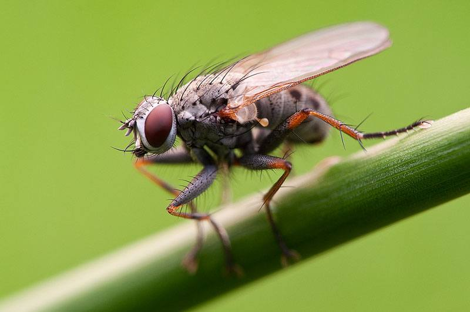
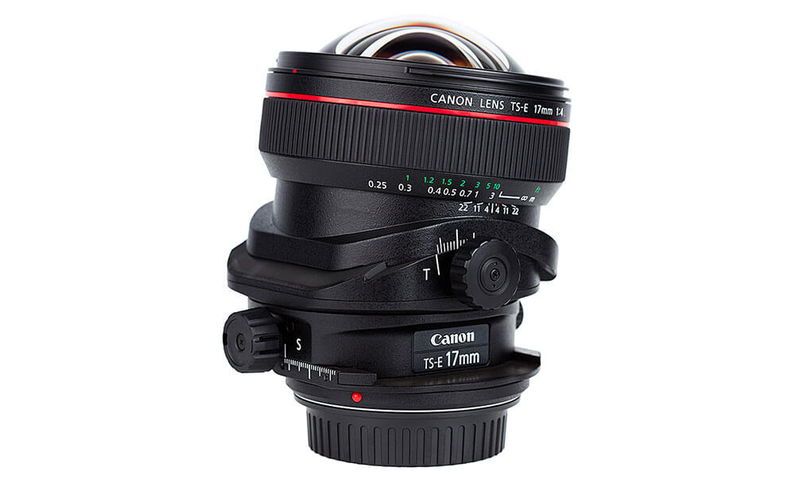
Objetivos descentrables:
Es un objetivo cuya construcción permite que el eje óptico pueda moverse, quedando descentrado y alterando el plano de enfoque sobre la cámara. Con él puede conseguir un aumento de la profundidad de campo o trastocarla, según se vea. Es ideal para fotografía de paisajes y arquitectura
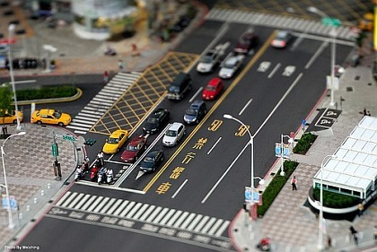
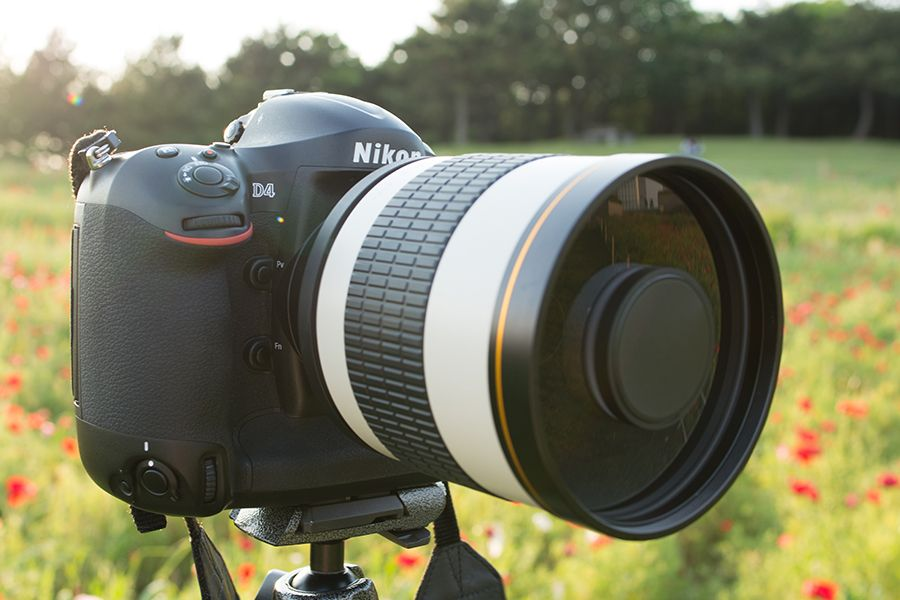
Catadióptricos:
Son objetivos que utilizan en su construcción una combinación de espejos curvados y elementos de vidrio, son muy compactos (un objetivo de 500mm puede medir solo 12cs de largo). Suelen ser de enfoque manual y tener una solo abertura de trabajo (la máxima), que suele ser bastante limitada (f5 o f8)